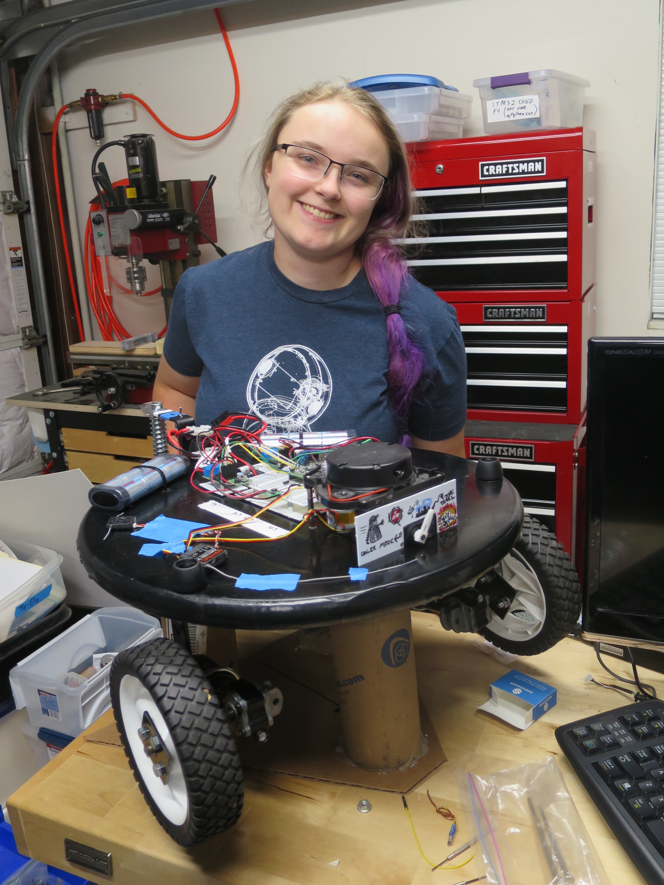

Sting Operation
Sting Operation is a homebrew telepresence robot, which I use to attend the Homebrew Robotics Club of Silicon Valley while away at MIT. Currently, it's outfitted with a Neato LIDAR, a Raspberry Pi, and a PyBoard controlling the motors and LIDAR. An iPad mounted on a tripod provides telepresence.

Here's a photo of the Sting Operation base (minus tripod). It's a two-wheeled base with a castor wheel, equipped with a Neato BotVac LiDAR for sensing, a PyBoard for motor control, and a Raspberry Pi running ROS.
There is also a RC receiver that can be used for local teleoperation, and a dial on the front of the robot indicating its state (under remote control, under local control, stopped, etc).